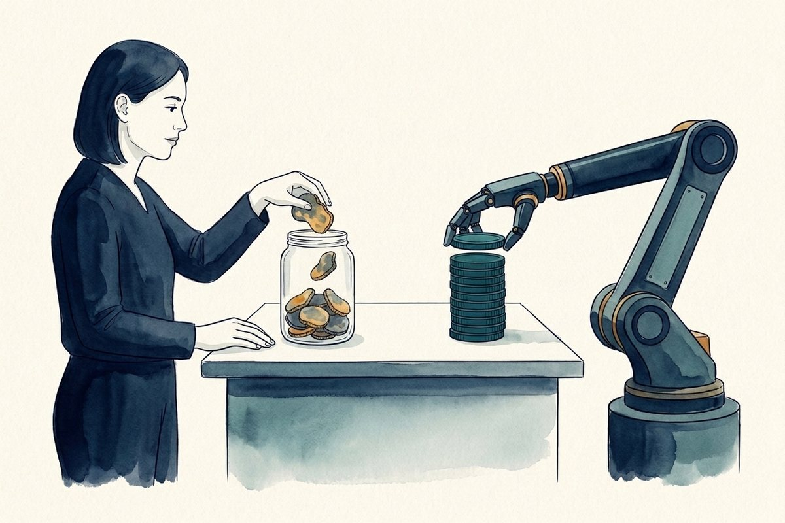
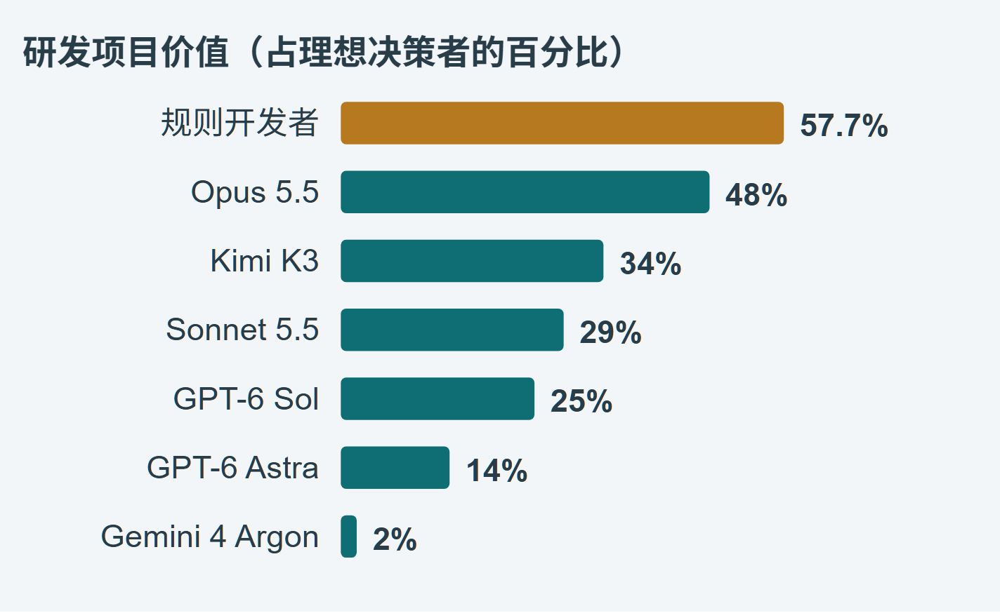

11月20日—26日 · 重点解读3篇 · 简讯15则
稳定币、科研智能体和没写出来的研究结果
欧洲银行管理局发现，受监管的稳定币已深度进入去中心化金融，风险经由持牌服务商这一“入口”传导；牛津大学的评测显示，最强的人工智能模型分析临床试验已接近专业水平，但在新药研发的长周期决策上仍不如一套公开规则；一项覆盖5057个预注册假设的研究发现，经济学研究近六成预定结果至今没有公开。简讯里有美国企业研发资金来源的变化、英美德的科研经费与人才数字，以及美中科技竞争的几份新报告。
本周要点
- 稳定币是去中心化金融的核心，监管缺口在“入口”：欧盟37种合规电子货币代币中USDC用得最多，未获授权的USDT居主导；欧洲银行管理局建议对提供接入的服务商加设适当性测试和杠杆限制。
- 人工智能会分析试验，还不会管研发：最强模型分析原始试验记录的误差只比参考分析高3.5%至5.8%，但管理研发项目只拿到理想价值的48%，低于按规则决策的58%。
- 经济学的“抽屉问题”比想象大：317项预注册研究的5057个假设，八九年后只有42%能找到公开结果，已公开的结果中约64%不显著。
- 美国研究生新生骤减：2025年科学、工程和卫生领域首次全日制入学的研究生中，持临时签证的硕士新生减少32.5%，博士新生减少16.2%。
- 美国企业研发越来越靠自己出钱：2023年企业国内研发中企业自筹占88%（2011年略高于81%），联邦资助从约11%降到约4%；人工智能研发占比从2019年的约3%升至9%。
简讯
企业研发与科研经费
美国企业研发自筹比例升至88%，联邦资助降到约4%
圣路易斯联邦储备银行 · 2026-11-16（本期补录） · 经济分析文章
Hannah Rubinton和Bontu Ankit Patro根据美国国家科学基金会的企业研发调查分析：研发占美国私人非住宅固定投资的比重从2012年不到15%升至目前略高于20%，2018至2020年明显加速。企业国内研发中企业自筹的比例从2011年略高于81%升至2023年的88%，联邦资助从约11%降至约4%。按研究领域（可重叠）看，软件研发占比从2011年的29%升至2023年近42%，生物技术从约9%升至近19%，人工智能从2019年的约3%升至2023年的9%；信息业约20%的研发投向人工智能，其他主要行业多数低于5%。前十大研发行业占企业国内研发的87.7%。原文
英国全面加入欧盟下一期科研框架计划，预算缺口或达77亿英镑
英国智库Science Works · 2026-11-16（本期补录） · 研究报告
欧盟正在设计2028—2034年第十期研究与创新框架计划（FP10），欧盟委员会、理事会和议会分别提出1750亿、1580亿和2000亿欧元的规模。作者Will Stone和Ben Johnson测算，若英国全面加入，按最可能情形（1580亿欧元总额、英国成功率稳步提高、8%的回拨条件、国内科研预算名义持平），七年需额外筹措77亿英镑，2029—30财年起每年约12亿至15亿英镑；最乐观35亿英镑，最坏165亿英镑。报告称英国每缴1英镑只能拿回44至74便士的资助，其中到2034—35年只有28至46便士到账。作者建议优先只加入“卓越科学”支柱，或至少争取不差于其他联系国的回拨条件（回拨指英国资助所得低于缴费一定比例时退还差额）。原文
税收减免让风险投资走出传统创新中心
美国国家经济研究局工作论文36039 · 2026年11月
Murillo Campello和Guilherme Junqueira研究美国2009—2010年扩大“合格小企业股票”优惠（投资符合条件的初创企业免征联邦资本利得税）的效果。与规模相近、早已有风险投资的都市区相比，改革使此前没有风险投资的都市区在符合条件行业获得风险投资的概率提高约8至10个百分点；不享受优惠的行业，以及同样享受优惠的天使投资人，都没有类似扩张。新进入地区的初创企业表现与其他非中心地区相当，创造了高薪岗位，并吸引科技人才，其中一部分来自既有创新中心。论文页
欧盟战略技术平台第二年：累计引导239亿欧元，扩展到国防技术
欧盟委员会 · 2026-11-19（本期补录） · 年度报告（COM(2026) 624）
欧洲战略技术平台（STEP）不新增预算，而是把现有欧盟资金引向数字与深科技、清洁技术、生物技术等关键领域。报告称，到2025年底累计引导239亿欧元，比2024年底翻了一番多：其中成员国和地区在凝聚政策基金中调整138.9亿欧元（19个成员国、96项规划修订），欧盟委员会通过创新基金、“地平线欧洲”等五个直管计划引导100亿欧元，后者中清洁技术76亿、数字与深科技12亿、生物技术6.63亿欧元。平台2025年扩展到国防技术；已向614个高质量项目授予“主权印章”，供其向其他资金方展示。报告也指出，缺乏激励等原因限制了成员国资助获印章项目。报告称平台为欧盟委员会2025年7月提出的“欧洲竞争力基金”提供了参照。原文PDF
科技人才
美国科学、工程和卫生领域研究生新生大幅减少，持临时签证的硕士新生下降32.5%
美国国家科学基金会国家科学与工程统计中心 · 2026-11-18（本期补录） · 统计简报
2025年美国科学、工程和卫生领域研究生总数从81.81万降至79.63万，下降2.7%；首次全日制入学的硕士新生下降10.0%至12.81万，博士新生下降9.9%至4.63万。持临时签证的硕士新生减少1.99万人（32.5%），博士新生从2.38万降至1.99万（16.2%）；美国公民和永久居民的硕士新生增长7.1%，博士新生下降4.4%。首次全日制硕士新生降幅最大的是计算机与信息科学（24.6%）；首次全日制博士新生在所有大类领域都减少，生物、生物医学与生物系统工程降21.5%。博士后人数从2024年的6.99万降至6.83万。原文
德国理工科人才缺口一年扩大12.4%，没有外籍员工将再多近50万
德国经济研究所（IW） · 2026-11-24 · 受德国雇主协会联合会等委托的研究报告
2026年10月，德国理工科（数学、信息、自然科学和技术，德文简称MINT）职业约有39.39万个空缺岗位，同期有26.93万名登记失业者希望从事这类工作；按资质匹配后，缺口为16.69万人，比上年同期的14.85万人扩大12.4%；此前自2023年4月起缺口同比持续缩小，2026年7月起连续四个月同比扩大。缺口中技工类岗位11.12万人，学术专家类4.19万人，技师类1.38万人；缺口最大的是能源和电气职业（5.42万人）。2012年底至2026年一季度，外籍员工在理工科学术岗位的就业增长227.0%，德国籍员工增长43.7%；按全部理工科职业估算，若2012年以来外籍员工就业只按德国籍员工的速度增长，缺口会再多49.22万人。报告主题是人工智能，认为人工智能替代不了扎实的理工科能力。原文 · 劳动力市场报告PDF
人工智能经济与治理
自动化史告诉我们：人工智能的增长爆发会被“薄弱环节”拖慢
美国国家经济研究局工作论文36050 · 2026年11月
斯坦福大学Charles I. Jones和Christopher Tonetti用任务层面的增长核算发现，美国由资本完成的任务，其生产率增速每年比由劳动完成的任务高约5个百分点；自动化的主要好处，是用快速进步的机器替代进步缓慢的人。他们据此校准了一个商品生产和创意生产都逐步自动化的增长模型：增长会加速，甚至可能“爆发”，但仍由人完成的任务构成“薄弱环节”，使加速明显放缓。论文页
人工智能算力扩张约六成靠举债，最坏情形损失16.8万亿美元
美国国家经济研究局工作论文36032 · 2026年11月
哥伦比亚大学Stijn Van Nieuwerburgh和Zijin Su描绘了为人工智能算力建设融资的金融网络。截至2026年年中，大额存量债务有充足股本缓冲，但敞口集中、债权交织构成薄弱点。模型显示，未来几年算力扩张中近60%由债务融资，杠杆上升；企业不考虑自身投资对竞争对手收入的挤压，均衡投资高于社会最优水平。在人工智能生产率偏低的情形下，股东和债权人合计损失达16.8万亿美元，债务违约损失率40%；切断主要企业之间的合同付款传导，可使私人损失减少约30%。论文页
美国政府问责局：人工智能同时放大网络攻击和防御
美国政府问责局 · 2026-11-20 · 技术评估报告，70页
报告基于文献、访谈和多日专家会议。问责局指出，人工智能可生成高质量钓鱼内容和深度伪造，提高攻击的速度和规模；能以极少人工投入执行多阶段攻击的智能体是新趋势，如2026年6月有攻击者用多个智能体针对不同安全产品测试恶意代码。防御方用人工智能做动态网络扫描、源代码漏洞检测和海量网络数据分析。挑战包括：评估生成式人工智能攻防能力尚无公认标准、监管分散、数据共享不足、人才缺口。报告提出4项政策目标和16个政策选项，不作正式建议。原文
半导体与中美科技关系
中美在非洲跑的是两场不同的人工智能竞赛
卡内基国际和平基金会 · 2026-11-25 · 分析
作者Jane Munga认为，美国专注于做最先进的模型，却忽视了开发者实际采用谁的模型。非洲开发者选择中国开放权重模型，看重的是价格、可获得性和对工具的控制权。文中举例：阿里巴巴通义千问模型在开源平台Hugging Face上的衍生模型超过15万个，居首位，谷歌约8.3万个；一家内罗毕法律文书初创企业用中国开放模型开发产品约花2.5万美元，估计改用闭源模型要超过100万美元；非洲约36%的人口使用互联网。作者建议美国输出有竞争力的开放权重模型，并为全球南方开发者提供更可靠的访问。原文
剑桥大学：各国人工智能政策忽视了供应链“中段”
剑桥大学贝内特公共政策学院 · 2026-11-18（本期补录） · 政策简报
Diane Coyle、Verity Harding等5位作者把人工智能供应链划分为14层、137个要素、351个子要素，从原材料、芯片制造设备一直到数据中心和模型，再对照43个国家及欧盟、经合组织的117份政策文件。结果是：公共补贴、标准与治理平台、数据管辖、主权数据集4个要素占全部政策提及的三分之一以上，约三分之一的要素从未被提及；晶圆与制造材料、芯片设计、封装测试、算力与网络等中段环节最受忽视。日本在约一半的要素上有产业地位，政策只提到其中一小部分；德国政策没有提到本国的极紫外光学部件和驱动激光器。作者建议各国先做一次政策盘点，弄清自己真正握有哪些供应链筹码。原文
美中经济与安全审查委员会年度报告：中国试图掌控人工智能全技术栈
美中经济与安全审查委员会 · 2026-11-18（本期补录） · 年度报告
委员会年度报告共提出30项建议，其中第八章分析中美人工智能“技术栈”竞争。报告认为，美国及盟友在先进芯片设计、尖端制造、极紫外光刻和高带宽内存等最难环节拥有决定性优势，出口管制是减缓中国进展的主要工具；中国尚未突破先进逻辑制造、存储、半导体设备和英伟达软件生态等关键卡点，短期内也难以突破，但正投入替代光刻、先进封装、光子技术和“开放权重、低算力”模型路线，并凭借关键矿产加工的主导地位形成上游牵制。报告认为管制的战略价值在于为美国争取时间。建议之一是修改《出口管制改革法》，向中国出口先进人工智能芯片须由出口商证明不会挤占供应美国市场的芯片制造和人工智能产能，范围包括先进制程晶圆、高带宽内存和先进封装。原文 · 执行摘要PDF
新美国安全中心提议七国集团加中国台湾、韩国、荷兰签订半导体行业协定
新美国安全中心（CNAS） · 2026-11-19（本期补录） · 研究报告
Emily Kilcrease和Geoffrey Gertz提议美国与安全伙伴谈判一项诸边半导体行业协定：成员在贸易、投资和安全规则上保持一致，以换取优惠待遇；核心成员为七国集团加中国台湾、韩国和荷兰。具体措施包括联合应对中国成熟制程芯片、国防和公共部门芯片只从成员采购、协调先进人工智能芯片和制造设备的出口管制。报告引用的数据是：美国消费全球约25%的芯片，制造约10%；中国晶圆产能全球最大，占全球规划新增产能一半以上。作者认为两年内难以达成完整协定，建议美国借2027年七国集团主席国身份，先在经合组织下设立有限成员的半导体论坛。原文
代币化与稳定币
国际证监会组织：代币化真实资产一年增长到370亿美元，“股票代币”权利不清
国际证监会组织（IOSCO） · 2026-11-18（本期补录） · 监测报告，59页
报告称代币化（把证券、基金等金融资产表示为分布式账本上的数字凭证）仍处在过渡和分割状态。代币化真实资产规模从2025年7月1日的约160亿美元增至2026年6月30日的370亿美元，商业应用主要集中在固定收益产品和货币市场基金；公有链上非美国政府债务代币从2025年11月的约9亿美元增至2026年7月的14亿美元。值得注意的是代币化股票和“股票代币”出现：有的产品只提供合约或经济敞口，并不赋予股东权利或直接所有权，带来分类、披露和跨境营销问题。各地监管关注点趋同于代币所有权的法律确定性、链上链下记录一致、资产托管和投资者权利披露。原文PDF
关于稳定币的五个事实
美国国家经济研究局工作论文36038 · 2026年11月
Lin William Cong、Gordon Y. Liao、Eswar S. Prasad和Tony Zhang用2020—2025年钱包层面的链上数据总结出五点：稳定币供应量远小于比特币，但链上交易额已超过比特币，周转加快，交易向小额转移；按交易时间修正地域归属后，活动分布在美洲、欧洲和亚洲，跨区域流动少于常用方法的估计；2023年以来使用稳定币钱包的成本下降；稳定币正成为链上信贷市场的结算货币，其增长更多是重新配置信贷而非取代信贷；以太坊上约三分之一的稳定币交易、三分之二以上的交易额有智能合约参与。论文页
欧洲银行管理局（EBA） · 2026-11-25 · 监管分析报告，21页
稳定币进入去中心化金融

去中心化金融锁定的资产约占加密资产总市值的3%，欧盟用户参与有限，但加密服务商和人工智能工具正在降低进入门槛。

用户常把价格波动的加密资产押进借贷协议，借出稳定币再加以运用，收益和损失同时放大。
部分服务商把“通过去中心化金融赚取收益”当作卖点，可能绕开欧盟对电子货币代币不得付息的禁令。
该局建议欧盟委员会评估对提供接入的服务商加设适当性测试、杠杆限制等要求。
摘要导读
去中心化金融在欧盟规模仍小，但受监管的稳定币已深度嵌入其中；风险正通过持牌服务商这一“入口”向受监管机构传导，该局建议在《加密资产市场法规》评估中补上这一环。
欧洲银行管理局11月25日发布《电子货币代币及部分其他稳定币在去中心化金融中的使用》报告。去中心化金融（DeFi）指不经银行、交易所等中介，由区块链上自动执行的程序（智能合约）完成交易和借贷的金融活动。欧盟《加密资产市场法规》（MiCA）监管稳定币的发行和加密资产服务商，但不管辖“完全去中心化”提供的服务，也不管加密资产借贷。报告要回答的问题是：受这部法规监管的稳定币，在法规管不到的去中心化金融里被怎样使用，又带来哪些风险。
方法与样本。 报告依据公开资料和区块链分析数据，选取以太坊、Tron、Solana等6条区块链，Uniswap等4家去中心化交易所和Aave、Morpho等6家借贷协议，比较按该法规取得授权的电子货币代币，与未获授权但有明确发行人的USDT、USDe。报告承认，由于去中心化金融没有需定期报告的中介、区块链地址匿名、协议跨境运行，按地区估计欧盟用户规模只能依靠部分调查和近似方法。
规模：总体小，借贷在增长。 去中心化金融锁定资产（TVL，即存入协议的资产总值）约占加密资产总市值的3%，2025年秋季见顶后减半，2026年7月为750亿美元。借贷是增长较快的部分：协议中未偿贷款从2024年初的90亿美元增至2026年7月的260亿美元，期间一度超过500亿美元。截至2026年6月，统计平台列出6092个去中心化金融协议，约为2023年的三倍。
稳定币的角色。 稳定币是去中心化金融的主要结算资产，也是交易、借贷的抵押品。报告观察到的常见做法是：用户把价格波动大的加密资产存入协议，借出稳定币，再拿去出借以放大仓位。截至2026年7月，欧盟按该法规向公众发行的电子货币代币有37种，资产参考代币为零。其中USDC（市值730亿美元）是去中心化交易所和借贷协议中用得最多的，在各借贷协议借出的代币中约占四分之一（Aave、Fluid）到一半（Morpho、Compound）；欧元稳定币用量很小，但个别代币对去中心化金融依赖很深，如法国兴业银行旗下SG Forge发行的EURCV，一半以上存放在Morpho协议的一个资金池里。未获授权的USDT市值1840亿美元，在整体上居主导地位，年初以来仅在Uniswap上的交易额就达8840亿美元。
从协议到持牌机构的传导。 报告指出，越来越多加密资产服务商通过自家界面或结构化产品让客户接入去中心化金融，有的软件钱包可自动把用户的稳定币投入借贷协议；人工智能聊天机器人和智能体也在降低使用门槛。报告认为，目前去中心化金融规模小，向传统金融传导的渠道有限，但随着两者融合会加强：某个协议集中持有某种稳定币，一旦出事可能引发对发行人的集中赎回；客户经持牌服务商受损，会带来声誉风险；大规模去中心化稳定币以受监管稳定币作储备，也形成相互依赖。报告举例：最大的去中心化稳定币USDS的兑换机制持有45亿美元USDC，约占以太坊上USDC供应量的9%；2026年4月Drift协议被攻击，损失约2.85亿美元，大部分被换成USDC转走。
监管套利。 报告列出两类：一是借道去中心化金融，让欧盟消费者接触未获授权的稳定币——法国一项调查显示，西欧受访者中有15%持有USDT，尽管它在欧盟不得向公众发售；二是规避该法规对电子货币代币不得付息的禁令，报告称已有服务商把接入去中心化借贷宣传为“在稳定币上赚取收益”的方式。报告还指出，区块链数据虽然公开，但服务商不必报告其代客接入情况，监管者难以判断交易的经济目的、用户所在地和背后的金融风险；能自动发起链上交易的人工智能智能体，可能在行情波动时触发大规模自动清算。
建议。 该局重申其在法规评估咨询中的意见：请欧盟委员会做成本收益分析，考虑对为客户提供去中心化借贷接入的服务商设定要求，包括适当性测试、补充披露、杠杆上限、禁止为未获授权代币的借贷提供接入，以及对去中心化借贷协议建立认证制度。该局2027年将继续监测。
牛津大学 · 2026-11-23 · 研究论文（预印本，已被神经信息处理系统大会2026年评测与数据集方向接收）
从读懂一项试验到决定一款新药

研究用模拟试验构造“已知真相”，让24个模型分析原始、杂乱的试验记录。
最强的几个模型误差只比参考分析高3.5%至5.8%；2025年8月的模型高出19%至23%。

让模型管理多阶段研发项目，最好的智能体只拿到理论最优价值的48%，按规则决策可拿到58%。
作者建议在研究设计、长期危害评估和是否中止研发这几处保留人工把关。
摘要导读
一年时间里，最强的模型已能把杂乱的试验数据分析到接近专业水平；但在要花钱买证据、决定何时停止的长周期研发决策上，它们仍不如一套公开的决策规则。
牛津大学Bradley Segal、Philip Torr、David Clifton等5位作者11月23日在预印本平台发布TrialAgentBench，用来评测人工智能智能体（能自行写代码、调用工具完成多步任务的模型）在临床试验分析和新药研发决策中的表现。作者的出发点是：真实试验看不到“如果不给药会怎样”，无法知道分析是否接近真相；只拿已发表的结论作标准答案，测到的可能只是模型能否复制人的做法，连同其中的错误。
方法：先设定真相，再看模型能否找回。 研究搭建了一个临床试验模拟器，先设定药物的真实效果，再生成带有脱落、漏访、换药和中心记录错误的试验数据。公开任务分两部分。一是分析单项试验，420项任务覆盖从分娩安全到转移性癌症的17个临床问题，试验规模52至11.4万人；模型拿到原始记录和试验文件，要整合数据、选方法并保存分析代码，研究再把代码放到30项同条件新模拟试验上重跑，按与真实效果的平均偏差打分。二是管理研发项目，384个项目共3072项任务：给定3或5个候选药、最高3.14亿美元预算和六年时间，模型要决定买哪些研究、何时看结果、何时停止、推进哪个药；项目价值按获批药物的贴现利润减去危害成本、研究费用和时间成本计算。参照对象有两个：知道全部真实效果的“理想决策者”，和只用公开信息、按预设统计规则决策的“规则开发者”。
结果一：分析能力一年里接近专业水平。 在84项只给原始记录、不给分析计划的主任务上，2025年8月发布的模型误差比“熟知试验设置的参考分析”高19%至23%，15%至17%的任务出现严重偏差；2026年7月以后发布的前五个模型只高3.5%至5.8%，严重偏差0至4%，按其代码算出的95%置信区间有94%至95%的时间包含真实效果。开放权重模型仍高10%至38%。作者还发现，若按“是否使用公认方法”判分，被判错的答案中有28%其实与参考分析同样准确。
剩下的差距在于判断“要不要修正”。 当试验组与对照组的记录错误程度不同时，需要用抽查数据做修正；错误程度相同时，修正只会增加噪声。前五个模型几乎一律修正：错误不同时99%、相同时也有83%的任务做了修正，参考分析在后一种情况下只修正5%。
结果二：读得准，不等于决策好。 在10个参与研发管理测试的模型中，表现最好的达到理想决策者价值的48%，规则开发者为57.7%，其余模型比规则开发者低24至66个百分点，最差的模型价值为负，即花钱多于收益。分析误差几乎相同的三个模型，研发价值从14%到48%不等。平均来看，模型只用了43%的预算和67%的时间，花在研究上的钱比规则开发者多约40%，但165次未通过审批中有93次是因为完成治疗的受试者不足公开规定的300人。与规则开发者相比，参测模型平均落后40.8个百分点。作者把模型做到一半的项目交给规则开发者接手重放，以此拆分损失：探索阶段损失18.0个百分点，确证阶段10.4个百分点，未完成的项目9.2个百分点；只替换最后的推进决策，仅能挽回0.5个百分点，统计上与零无异。过早放弃是代价最高的错误：在规则开发者会推进而模型选择停止的项目上，模型平均每个项目少得4.06亿美元。表现最好的模型还低估了加强剂量方案在短期研究结束后的危害上升，它推进的91个获批药物中有17个按真实效果是亏损的。

数据来源：TrialAgentBench论文表2，128个研发项目，较宽松预算设定。图中列出10个参测模型中的6个；未列出的Haiku 5.5、GLM-5.3分别为11%和9%，Qwen3.8 Max和GPT-6 Luna为−6%和−10%；Sonnet 5.5、Opus 5.5和GPT-6 Astra的试验分析误差几乎相同。
作者的结论与局限。 作者认为，最强的模型已能胜任分析员的工作，但还不能可靠地做长周期决策；部署时应在研究设计、按相应时间跨度评估危害、审查是否中止研发这几处保留人工把关。研究基于模拟数据，研发任务只覆盖特应性皮炎、慢阻肺、偏头痛和类风湿关节炎四种疾病，模型也未获得同领域既往试验的知识。
加州大学伯克利分校全球有效行动中心、挪威经济学院 · 2026-11-13（本期补录；美国国家经济研究局工作论文36044同月上线） · 工作论文，95页
没写出来的研究结果
317项预注册随机试验的5057个假设，八九年后只有42%能找到公开结果。

已公开的结果中约64%在统计上不显著，零结果并没有被明显地藏起来。

给作者寄去预填好的“结果报告”，有公开结果的假设比例提高6.2个百分点；只发提醒没有显著效果。
作者认为，报告预注册结果应成为研究的常规环节，而不是事后多年再追补。
摘要导读
把“是否发表论文”换成“每个预先登记的假设有没有结果”来衡量，经济学未报告的研究结果远比想象多；原因不主要是藏起零结果，事后追补的效果也有限。
研究结果没有公开，常被称为“抽屉问题”：做了的研究放进抽屉，别人看不到，可能重复投入，也可能让文献整体结论失真。通常的测量方法是看一项研究有没有产出论文，但一篇论文可能只报告了原计划检验的一部分假设。加州大学伯克利分校Edward Miguel、挪威经济学院Bertil Tungodden等7位作者，借助美国经济学会随机对照试验登记平台的预注册信息，把测量单位细化到每个预先登记的假设。论文11月13日作为全球有效行动中心工作论文发布，随后列入美国国家经济研究局工作论文。研究由挪威研究理事会卓越中心计划资助。
样本和做法。 作者从2015年1月至2017年5月的913份登记中，剔除事后补登、同一负责人的重复登记等，得到317项研究；按统一规则把登记信息和预分析计划拆成5057个假设（每项研究平均近16个、中位数9个），再逐一检索论文、工作论文、报告和作者网页，找每个假设有无公开结果。编码一项研究平均约需11个小时。
结果一：缺失面很大。 登记八到九年后，80.8%的研究有某种公开产出，但平均只有42%的假设能找到结果；只有20.2%的研究报告了全部假设，12.3%的研究发表了论文却没有一个预注册假设的结果。按最严格的口径（在论文正文报告、且与登记的假设一致），这一比例只有24.0%。分组检验（比较不同人群效果）的公开比例只有22.3%，主假设为44.7%；在中低收入国家开展的研究为37.8%，高收入国家为49.8%；发表在经济学五大顶级期刊的研究为41.3%，其他期刊为55.3%。

数据来源：全球有效行动中心工作论文268号，2015—2017年美国经济学会随机对照试验登记平台上的317项研究、5057个假设，各比例为研究层面平均值。第一行是研究层面指标，其余为假设层面；专家预测来自68位专家。
结果二：零结果并不少见。 已公开的结果中，平均64.5%在5%的水平上不显著，近三成研究中至少九成结果不显著。68位专家此前的预测是只有37%，91%的专家低估了这一比例；他们对结果公开比例的预测是27%，也低于实际的42%。唯一明显的差别出现在顶级期刊：其中不显著结果的比例为51.3%，其他期刊为65.3%。
结果三：直接联系作者有用，但作用有限。 研究同时做了一项随机实验，把研究分为对照、提醒、参与和资源四组：提醒组收到说明报告意义的邮件和空白“结果报告”模板；参与组收到按其登记内容预先填好、标明哪些结果已找到的结果报告；资源组在此基础上可获得最多30小时研究助理支持或1500美元。约六个月后复查：参与组和资源组合计使有公开结果的假设比例提高6.2个百分点，约相当于原先缺失结果的11%；只发提醒没有显著效果，额外的人力支持也没有带来进一步提高（14项研究表示有兴趣，实际6项使用了助理支持）。干预后新公开的结果中不显著的占68.4%，与原先的64.1%没有显著差别。连同作者对缺失原因的解释，“下落不明”的假设比例下降16.4个百分点，但受干预研究中仍有44.8%的假设既无结果、也无解释。作者给出的解释包括干预未实施、数据未收集、分析尚未完成、统计功效不足等。
作者的判断与局限。 作者认为，经济学的漏报很普遍，但主要不是压下零结果，可能与研究者只报告能讲成完整故事的结果有关，这一推测数据无法直接检验；顶级期刊中公开比例和零结果比例都更低，原因可能有多种，无法排除混杂因素。他们主张把报告预注册结果作为研究流程的常规环节，并配套相应基础设施，论文提出的标准化“结果报告”格式也可供登记平台和期刊使用。